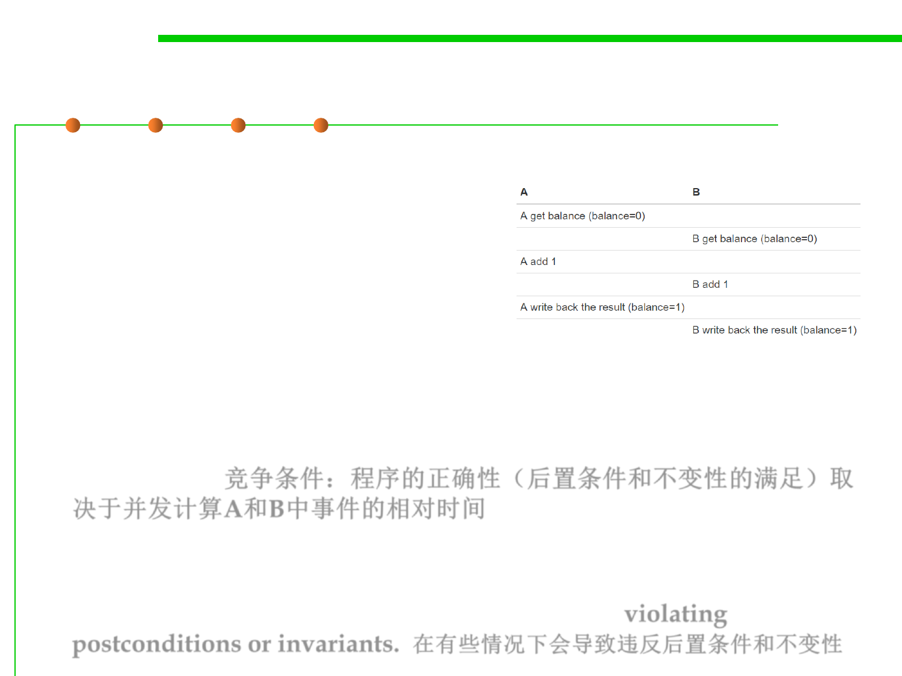

Race Condition 竞争条件
10.1 Concurrency and Thread-Safety
▪ The balance is now 1 – A’s dollar was lost!
– A and B both read the balance at the
same time, computed separate final
balances, and then raced to store back
the new balance – which failed to take
the other’s deposit into account.
▪ This is called race condition: the correctness of the program (the
satisfaction of postconditions and invariants) depends on the relative
timing of events in concurrent computations A and B. When this
happens, we say “A is in a race with B.” ,or called “Thread
Interference. 竞争条件：程序的正确性（后置条件和不变性的满足）取
决于并发计算A和B中事件的相对时间
▪ Some interleavings of events may be OK, in the sense that they are
consistent with what a single, nonconcurrent process would produce,
but other interleavings produce wrong answers – violating
postconditions or invariants. 在有些情况下会导致违反后置条件和不变性